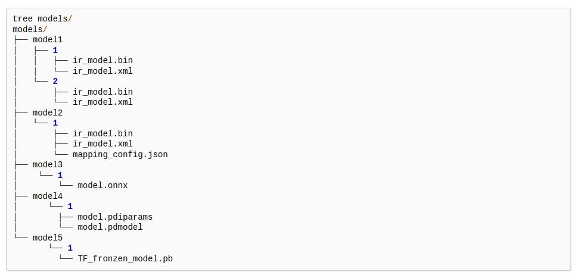
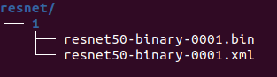
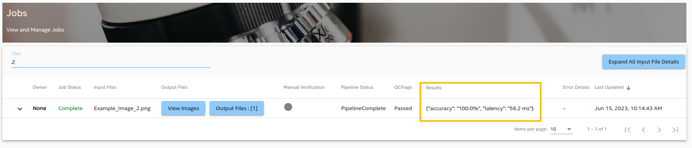

In this end to end demo, the Image Classification example posted in OpenVINO Github Repo is modified to build this BentoML docker service, then integrated to make this ML pipeline work with the AiCSD project.
Image captured from the OEM device is automatically transferred to the Gateway for ML pipeline processing.
This ML pipeline performs image processing by reading all images and their labels specified in the text file. It then classifies them with the ResNet50 model and presents accuracy and latency results.
Results are then sent back and can be viewed through the AiCSD UI.
For ML pipeline processing with OpenVINO on CPU for the Gateway hardware, select FP32 version of the model. If processing occurs on GPU or VPU, then FP16 version of the model can be used.
Downloaded Model consists of the bin & xml files for OpenVINO - resnet50-binary-0001.bin & resnet50-binary-0001.xml.
Model directory structure must follow the OpenVINO Model Server guidelines with sub-directory named 1 and everything else falling inside this as files or sub-directories.

Figure 1: OpenVINO Model Server Directory Structure
Model Directory sturcture for this resnet model should be as shown below -

Figure 2: Resnet Model Directory Structure
Zip the model folder and name it as resnet.
Warning
Within this zip model, ensure sub-directory is named 1 and everything else falls inside this as files or sub-directories. Upload model in next step will fail if this directory structure is incorrect.
Image Classification code is available under the demos folder in the AiCSD project repo.
Follow the instructions in the End to End ML Pipeline Execution section in the BentoML Developer Guide.
Figure 3 displays the job with accuracy and latency as result after executing the image classification ML pipeline via AiCSD.

Figure 3: Image Classification Result displayed in Job UI